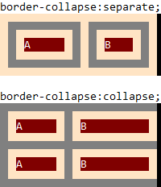
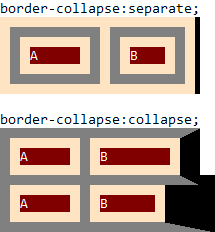
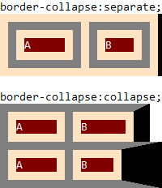
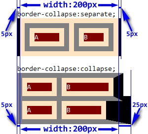

RE8002: 各浏览器对 table 级元素的 'width' 特性的作用位置存在差异
标准参考
根据 CSS2.1 规范的描述，可以通过给一个元素设置 'width' 特性以定义其内容尺寸，即这个尺寸是作用在该元素的 content box 上的。然而在表格中，这个特性的作用位置与普通块级元素有所不同。
在 CSS 中，当为表格的单元格设置边框时，存在着两种不同的边框模型。两种模型通过 'border-collapse' 特性来指定。不同的边框模型将会影响表格 'width' 特性的作用位置。
其中一种为 "分离的边框模型" (separated borders model)，此模型下所有的单元格均是相互独立的，每个单元格拥有自己的边框。此时表格的宽度为从左侧 padding 的内沿至右侧 padding 的内沿 (包括边框间隙但不包括表格的 padding 和 border)。然而在 HTML 和 XHTML1 中 TABLE 元素的宽度为左边框边至右边框边之间的距离，即 TABLE 元素的 'width' 特性作用于 border box。
下图展示表格设定了 'border-spacing' 特性，每个单元格都有自己的边框，而表格也有自己的边框示例：

另一种为 "重合的边框模型" (collapsing border model)，此模型下有可能指定一个边框来环绕单元格、行、行组、列、列组的全部或部分。'border-spacing' 特性及 cellspacing 属性不再适用，表格不再拥有 padding (但是有 margin)。此时表格的宽度包含表格边框的一半。对于表格的每一行宽度的计算有如下公式：
row-width = (0.5 * border-width0) + padding-left1 + width1 + padding-right1 + border-width1 + padding-left2 +...+ padding-rightn + (0.5 * border-widthn)
以上，n 代表行内单元格的数量，padding-lefti 和 padding-righti 代表第 i 个单元格的左 / 右 padding，border-widthi 代表单元格 i 和 i + 1 之间的边框。
用户端必须通过检查表格第一行的第一个和最后一个单元格来为表格计算一个初始的左、右边框宽度。表格的左边框宽度为第一个单元格的左边框与表格左边框折叠 (即两者中的较大者) 后的一半，同样右边框宽度为最后一个单元格的右边框与表格右边框折叠后的一半。若之后出现了折叠后更大的左、右边框，则多余的部分溢出到表格的 margin 区域。对于表格的上边框与下边框也有类似的算法。
溢出到表格 margin 区域的边框将由表格的 'overflow' 特性决定是否剪裁。
下图展示显示单元格、border 以及单元格 padding 的示例：

以上提到的 content box 和 border box 是盒模型中的概念，请参考 CSS2.1 规范 8 Box model 中的内容。
关于 'width' 特性的更多信息，请参考 CSS2.1 规范 10.2 Content width: the 'width' property 中的内容。
关于 表格的边框模型 的更多信息，请参考 CSS2.1 规范 17.6 Borders 中的内容。
问题描述
在 IE6 IE7 IE8(Q) 中，不支持 'display' 的替代值，'display:table' 会被当作不合法的值处理，元素根据其原始类型相当于使用的是其默认 'display' 值 'inline' 或 'block'。
在 IE8(S) Firefox 中，对于 TABLE 元素，'width' 特性作用于表格第一行的 border box 上；对于 'display' 特性为 'table' 的非 TABLE 元素，"分离的边框模型" 中 'width' 特性作用于表格左侧 padding 的内沿至右侧 padding 的内沿，"重合的边框模型" 中 'width' 特性作用于表格边框的一半的位置。
在 Chrome Safari 中，在 "分离的边框模型" 中 'width' 特性作用于 border box；在 "重合的边框模型" 中 'width' 特性作用于第一行的 border box。
在 Opera 中，对于 TABLE 元素，'width' 特性会作用于表格中最宽的那行的 border box 上；对于 'display' 特性为 'table' 的非 TABLE 元素，表现得与 IE8(S) Firefox 相同。
造成的影响
这个问题会造成设置了 'display:table' 的元素在不同浏览器中的宽度出现差异，可能导致布局混乱、文字重叠等兼容性问题。
受影响的浏览器
| 所有浏览器 |
|---|
问题分析
在具体分析 'display:table' 元素的 'width' 特性作用位置之前，先查看一下各浏览器对于 TABLE 元素的 'width' 特性的作用位置。根据 CSS2.1 规范附录中推荐的 HTML4 默认样式表，TABLE 元素默认的 'display' 特性即为 'table'。
分析以下代码：
<div>border-collapse:separate;</div>
<table id="table1" cellspacing="10" cellpadding="10" style="width:200px; background:bisque; border-collapse:separate; border-right:5px solid black;">
<tr>
<td style="border:10px solid gray; width:50px;">
<div style="background:maroon; color:white;">A</div>
</td>
<td style="border:10px solid gray;">
<div style="background:maroon; color:white;">B</div>
</td>
</tr>
</table>
<br />
<div>border-collapse:collapse;</div>
<table id="table2" cellspacing="0" cellpadding="10" style="width:200px; background:bisque; border-collapse:collapse; border-right:5px solid black;">
<tr>
<td style="border:10px solid gray; width:50px;">
<div style="background:maroon; color:white;">A</div>
</td>
<td style="border:10px solid gray; border-right:20px solid black;">
<div style="background:maroon; color:white;">B</div>
</td>
</tr>
<tr>
<td style="border:10px solid gray; width:50px;">
<div style="background:maroon; color:white;">A</div>
</td>
<td style="border:10px solid gray; border-right:50px solid black;">
<div style="background:maroon; color:white;">B</div>
</td>
</tr>
</table>
上面代码分别测试了两种边框模式下的 TABLE 元素的 'width' 特性作用位置。TABLE 元素均设置了宽度 200px。在第二个 "重合的边框模型" 的 TABLE 元素上，表格自身的右边框宽度小于每行中最右的单元格的右边框宽度。
这段代码在不同浏览器中运行结果如下：
| IE6 IE7 IE8(Q) | IE8(S) Firefox Chrome Safari | Opera |
|---|---|---|
|  | 1 |  |
本例中，对于 "分离的边框模型"，各浏览器没有出现差异，TABLE 元素的 'width' 特性作用在 border box，虽然与 CSS 规范所描述的 padding 内沿不符，但符合 HTML 规范。
而第二个 "重合的边框模型" 的 TABLE 元素上：
- 在 IE6 IE7 IE8(Q) 中，浏览器不会比较表格边框和与之相邻的单元格边框的宽度大小以决定折叠后的边框宽度，而是直接将 TABLE 边框宽度作为最终的边框宽度，而此时 'width' 特性作用于 TABLE 元素的 border box，与 "分离的边框模型" 下的情况一致；
- 在 IE8(S) Firefox Chrome Safari 中，浏览器按照规范对表格的边框宽度进行了折叠计算，而 'width' 特性则是作用于第一行的 border box 上，这时有可能出现 TABLE 多余的边框溢出其宽度限制；
- 在 Opera 中，浏览器按照规范对表格的边框宽度进行了折叠计算，但 'width' 特性会作用于最宽的那行的 border box 上，即 TABLE 元素所有行的宽度不会超过其设定的宽度。
可知，对于 TABLE 元素，所有浏览器均没有完全按 CSS 规范中的描述应用其 'width' 特性。
注 1：各浏览器对于表格边框的颜色渲染会稍有差别，但不影响最终布局。
下面重点分析各浏览器中 'display' 特性值为 'table' 的元素 'width' 特性的作用位置差异。由于 IE6 IE7 IE8(Q) 不支持 'display' 特性的替代值，所以下面的测试不再考虑这些浏览器。
分析以下代码：
<div>border-collapse:separate;</div>
<div id="table1" style="display:table; width:200px; border-spacing:10px; background:bisque; border-collapse:separate; border-left:5px solid black; border-right:5px solid black;">
<div style="display:table-row;">
<div style="display:table-cell; padding:10px; border:10px solid gray; width:50px;">
<div style="background:maroon; color:white;">A</div>
</div>
<div style="display:table-cell; padding:10px; border:10px solid gray;">
<div style="background:maroon; color:white;">B</div>
</div>
</div>
</div>
<br />
<div>border-collapse:collapse;</div>
<div id="table2" style="display:table; width:200px; background:bisque; border-collapse:collapse; border-right:5px solid black;">
<div style="display:table-row;">
<div style="display:table-cell; padding:10px; border:10px solid gray; width:50px;">
<div style="background:maroon; color:white;">A</div>
</div>
<div style="display:table-cell; padding:10px; border:10px solid gray; border-right:20px solid black;">
<div style="background:maroon; color:white;">B</div>
</div>
</div>
<div style="display:table-row;">
<div style="display:table-cell; padding:10px; border:10px solid gray; width:50px;">
<div style="background:maroon; color:white;">A</div>
</div>
<div style="display:table-cell; padding:10px; border:10px solid gray; border-right:50px solid black;">
<div style="background:maroon; color:white;">B</div>
</div>
</div>
</div>
这段代码结构与上一个测试样例的代码相似，将 TABLE、TR、TD 元素分别用 'display' 特性值为 'table'、'table-row'、'table-cell' 代替，同时用 'border-spacing' 特性代替 TABLE 元素的 cellspacing 属性，用给 TD 元素设置 'padding' 特性代替 TABLE 元素的 cellpadding 属性。
这段代码在不同浏览器中运行结果如下：
| IE8(S) Firefox Opera | Chrome Safari |
|---|---|
| 1 |  |
在使用 'display' 特性值代替 TABLE、TR、TD 元素后，在 Chrome Safari 中渲染的结果与真实的 TABLE 元素一样。在 "分离的边框模型" 中 'width' 特性作用于 border box；在 "重合的边框模型" 中 'width' 特性作用于第一行的 border box。
在 IE8(S) Firefox Opera 中，此时 'display:table' 元素的 'width' 特性作用位置与 CSS2.1 规范中的描述一致，即对于 "分离的边框模型"，'width' 特性作用于表格左侧 padding 的内沿至右侧 padding 的内沿 (包括边框间隙但不包括表格的 padding 和 border)；对于 "重合的边框模型"，'width' 特性作用于表格边框的一半的位置。
注 1：各浏览器对于表格边框的颜色渲染会稍有差别，但不影响最终布局。
解决方案
对于 'display:table' 应谨慎使用。若需要实现表格结构，应直接使用 TABLE 元素，此时在 "分离的边框模型" 中所有浏览器对于 TABLE 元素的 'width' 特性均是作用于 border box。
若必须使用 'display:table'，则可以通过 CSS3 中的 'box-sizing' 特性统一各浏览器中 table 级元素的 'width' 特性作用位置，如为 IE8(S) 和 Opera 设置 'box-sizing:border-box'，以及为 Firefox 设置 '-moz-box-sizing:border-box' 可以使这些浏览器与 Chrome Safari 一样使 'display:table' 元素的 'width' 特性均作用于 border box。
对于 "分离的边框模型" 则应避免出现折叠后的表格边框溢出至表格 margin 区域这种情况发生，结合上面针对 "分离的边框模型" 的方法也可以使各浏览器统一 table 级元素的 'width' 特性的作用位置。
参见
知识库
相关问题
- RD8001: 各浏览器中 'width' 和 'height' 在某些元素上的作用位置有差异
- RM8001: IE6 IE7 IE8(Q) 不支持 'display' 的替代值
- RX1008: IE6 IE7 IE8(Q) 中 cellspacing 属性在重合的边框模型的表格中仍然有效
测试环境
| 操作系统版本: | Windows 7 Ultimate build 7600 |
|---|---|
| 浏览器版本: | IE6 IE7 IE8 Firefox 3.6.9 Chrome 7.0.517.0 dev Safari 5.0.1 Opera 10.61 |
| 测试页面: | table_elem.html dis_table_elem.html |
| 本文更新时间: | 2010-09-10 |
关键字
TABLE TD display 表格 border box content 盒模型 宽度 width